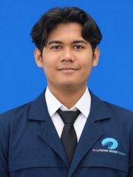

Dari lini produksi hingga robot buatan sendiri, saya menjaga mesin tetap akurat, aman, dan berjalan.
Mahdi Ni’am Ma’ruf, S.Tr.T., lulusan Teknologi Rekayasa Robotika Politeknik Negeri Batam (IPK 3,83) dengan pengalaman langsung di maintenance dan kalibrasi mesin PCBA, kelistrikan, PLC, dan robotika. Bersertifikat Ahli K3 Umum.

Tentang saya
Saya terbiasa bekerja di lantai produksi: membaca skematik, merakit wiring, mencari akar masalah secara terstruktur, lalu memperbaiki proses agar masalahnya tidak berulang.
Selain kuliah dan pekerjaan, saya membangun robot dan sistem IoT bersama tim BRAIL, mencakup fabrikasi mekanik, elektronik, dan perangkat lunak, sehingga saya nyaman bekerja lintas disiplin.
Saya terbuka untuk peran maintenance, otomasi, robotika, kelistrikan, dan K3, di Batam maupun di luar Batam.
Sekilas
- LokasiBatam, Indonesia · terbuka untuk relokasi
- PendidikanD4 Teknologi Rekayasa Robotika, Politeknik Negeri Batam · IPK 3,83 · Cum Laude
- SertifikasiAhli K3 Umum (SKKNI) · Universal Robots CB3
- BahasaIndonesia (native) · Inggris (TOEIC 645)
Pengalaman kerja
Maintenance Engineering Intern
- Menjalankan setup, preventive maintenance, troubleshooting, dan continuous improvement pada mesin PCBA dan alat uji di lini produksi.
- Melakukan kalibrasi alat ukur harian dan pelacakan data kualitas, serta menerapkan perbaikan proses yang bertujuan mengurangi reject, limbah material, dan downtime.
Cakupan kerja harian
Kalibrasi dan verifikasi alat ukur
- Memverifikasi suhu solder iron di 4 stasiun dan 5 torque driver setiap pagi (toleransi ±0,01 Nm).
- Melakukan re-kalibrasi harian test set Hipot, IM Test (PIM), dan VSWR (Network Analyzer) dengan golden sample: Pass berarti produksi berjalan, Fail berarti troubleshooting bagian demi bagian.
- Mengkalibrasi feeder di SMT, memperbaiki kabel Digital Torque Meter, dan mengganti baterai caliper.
- Melatih operator baru yang kini mampu melakukan kalibrasi harian secara mandiri.
Data produksi dan kualitas
- Melacak AOI Pass Yield dan False Call di template Excel dengan ringkasan harian dan bulanan otomatis (target pass yield ≥95%, false call <2500 PPM).
- Mengumpulkan dan menganalisis data kerataan AOI untuk uji coba produk baru.
- Melakukan oven thermal profiling dengan Malcom RCM-S dan software TAM 60, serta memverifikasi golden sample terhadap masterlist.
Maintenance dan troubleshooting
- Menyusun checklist maintenance berkala (FCT tester, Pasting, Laser Marking, Dispenser, Plasma, NPM, Unloader, 3D AOI), laporan PM bulanan, dan PM tag.
- Mendiagnosis dan memperbaiki error AOI, tracking error XY Laser Marking, gangguan sensor Plasma Cleaning, masalah Unloader, serta pusher dan tail length Wire Bonding.
- Mengganti gear dan sensor konveyor serta katup pneumatik.
- Membuat penutup tombol darurat, penutup sensor unloader, dan Teflon untuk mesin Pasting.
Dokumentasi dan kepatuhan
- Memelihara checklist harian, bulanan, dan tahunan serta catatan penggantian part.
- Mendukung persiapan beberapa audit internal dan eksternal; Siix sudah bersertifikat ISO 9001.
- Menangani pembuangan limbah B3, menerapkan 5S, dan menyusun rekap output produksi 2022–2026.
- Mengelola spare part dan perbaikan jig untuk menekan risiko downtime.
Mesin yang ditangani (23 unit di lini produksi)
Kaizen di PT Siix: Problem → Action → Result
Cleaning Protective Sheet Reminder
- Masalah
- Pembersihan protective sheet (Teflon) bergantung pada kedisiplinan operator, sehingga pembersihan yang terlewat dapat menyebabkan reject produk.
- Tindakan
- Membuat reminder berupa alarm suara setelah tiap siklus; mesin berjalan lagi hanya setelah operator membersihkan sheet dan menekan tombol konfirmasi.
- Hasil
- Memperkuat kepatuhan SOP dan bertujuan mengurangi reject dan limbah material.
Automatic Glue Application
- Masalah
- Lem tetap menyemprot di akhir tiap siklus sehingga terjadi overspray dan lem terbuang.
- Tindakan
- Mengotomasi aplikasi lem dengan relay self-holding 24V DC yang memutus suplai udara di setiap siklus.
- Hasil
- Menghilangkan overspray dan mengurangi pemakaian lem.
Battery Tester Machine
- Masalah
- Satu Battery Tester membatasi output pengujian.
- Tindakan
- Merakit wiring paralel berdasarkan skematik kelistrikan agar dua mesin tester dapat berjalan bersamaan.
- Hasil
- Memungkinkan operasi dua mesin sekaligus dan menaikkan output produksi.
Perjalanan
Keahlian
Maintenance dan keandalan
Kelistrikan, pneumatik, dan otomasi
Kalibrasi dan diagnostik
Desain rekayasa dan perangkat lunak
K3 dan standar mutu
Proyek
Portofolio Mahdi 2026 (Canva)
Gunakan panah kiri/kanan pada slide atau ikon layar penuh untuk melihat detail presentasi.
Portofolio Mahdi 2026 by Mahdi NM
Portofolio lengkap dan dokumentasi
Slide portofolio, PDF portofolio, dan arsip foto dokumentasi lapangan. Semua dibuka langsung di halaman ini.
Organisasi
Galeri dokumentasi kegiatan
Kepanitiaan, partisipasi, dan kegiatan sosial
Prestasi dan sertifikasi
Penghargaan kompetisi
- Juara 3 Teknologi Tepat Guna, PBL Expo 20245–7 Agu 2024 · Politeknik Negeri Batam · Delivery Robot Team
- Juara 3 Lomba Teknologi Tepat Guna (Kategori Mahasiswa), Kepri Engineering Expo PII 20237–9 Des 2023 · UMRAH, Tanjungpinang · Tema: IoT untuk mendukung UMKM di Kepulauan Riau
- Juara 2 (1st Runner-Up) KRAI Wilayah 12023 · Tim Barelang V · Kontes Robot ABU Indonesia
Kredensial terverifikasi
Paper penelitian dan CV
Pengembangan Sistem Penguncian Berbasis Kode QR untuk Robot Delivery Menggunakan Firebase Realtime Database
Pembimbing: Anugerah Wibisana, S.Tr.T., M.Tr.T · Politeknik Negeri Batam, 2026
Sistem otentikasi statis seperti RFID mudah dikloning, sehingga serah terima robot pengantar otonom perlu diamankan. Penelitian ini mengusulkan penguncian berbasis kode QR dinamis: GUI Python membuat kode unik 6 digit tiap 30 detik, Firebase Realtime Database menjadi perantara berlatensi rendah untuk aplikasi pemindai Android, dan Mealy Finite State Machine mengatur logika kontainer lewat sensor ultrasonik dan magnetik. Uji fungsional menunjukkan keberhasilan 100% pada pembuatan kode dan aktuasi kunci.
Curriculum Vitae (PDF, English)
CV terbaru yang ramah ATS. Pratinjau langsung di sini atau unduh.
Alur sistem (klik tiap tahap)
Mari bicara tentang peran berikutnya.
Tersedia mulai akhir Desember 2026. Berbasis di Batam, terbuka untuk bekerja di luar Batam.